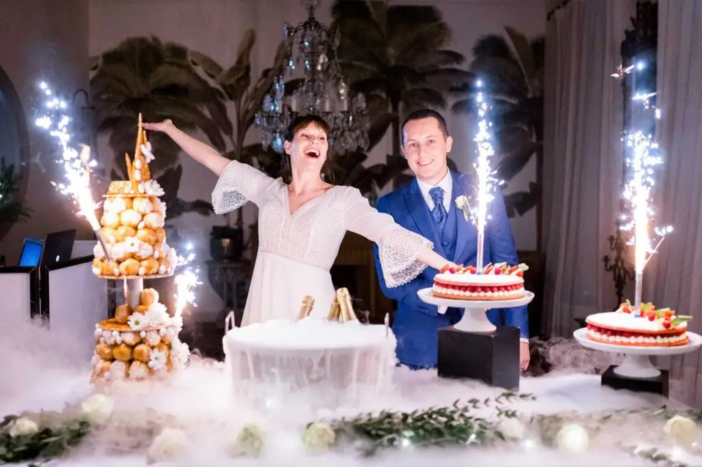
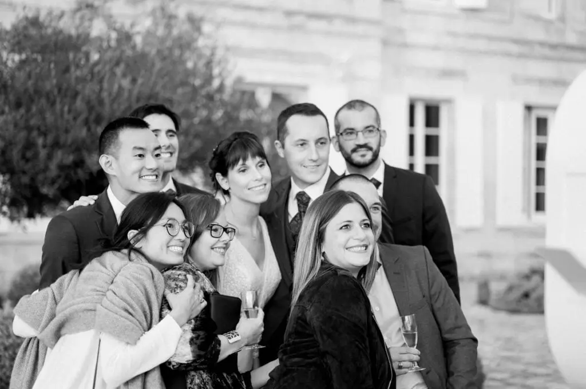
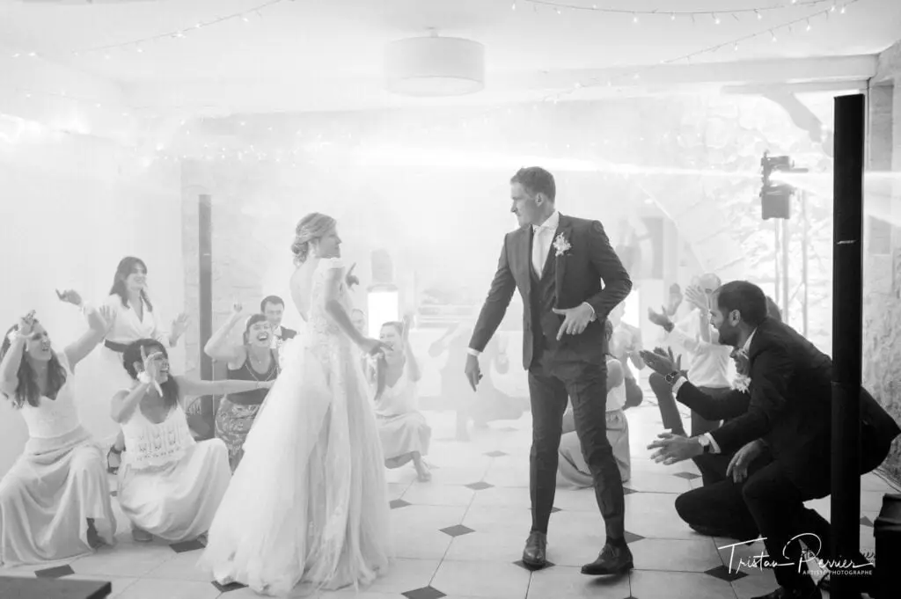

A planner who's always there for you!
I'll be an invaluable help in managing your stress.
Wanting one of the most beautiful days of your life to go perfectly is completely natural. That's why, as a wedding planner, I'm here to prepare you with a tailor-made schedule for the big day…
To show you how wedding day coordination works, here is a quick overview of a typical symbolic ceremony day, as if it were yours:
- Supporting the couple through the final preparations (dresses, make-up, suits, florists, venues)
- Welcoming the wedding suppliers who will be present at your ceremony (photographer, band, caterers)
- Setting up the buffets and the wedding decor exactly as you planned, down to the smallest detail
- Arranging your guests' seating and the table decor (seating the right people together and creating a warm table setting)
- Finding the perfect musical atmosphere for you and your guests
Together we'll create beautiful memories for the rest of your life, to share with your family at future celebrations!
My wedding planning agency, Lovely Day Event in Bordeaux, offers you personalised support built on the energy and strength of your couple, bringing a harmonious blend of your styles to your wedding. It's with great pleasure that I take charge of running the whole day.
Make your wedding evening a festive, joyful event
Together we'll express your union by filling your wedding ceremony with unique, special moments and beautiful family emotion. Setting up different lounges and entertainment, such as a photo booth, the drinks reception, a popcorn bar and a guest book, will help you remember every happy moment with your loved ones!
If it all seems clearer now and you'd like to give your event a touch of charm, get in touch 🙂



Lovely Day Event offers several services
Wedding planning
I step in at every stage of your preparations and guide you through your choices, bringing ideas and suggestions so that your wedding looks like no one but you.
On-the-day coordination
I will be the conductor of your day, managing the suppliers, the set-up of your decor and the smooth running of this beautiful day.
Wedding design
Creative and passionate, I am a certified Wedding Designer and I create a scenographic atmosphere that matches the theme of your wedding. Styling is included in the Signature package, or offered as an add-on to on-the-day coordination.